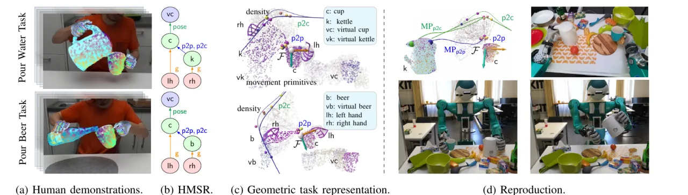
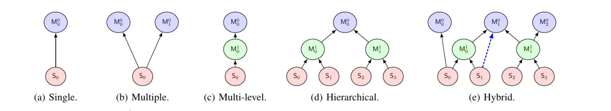
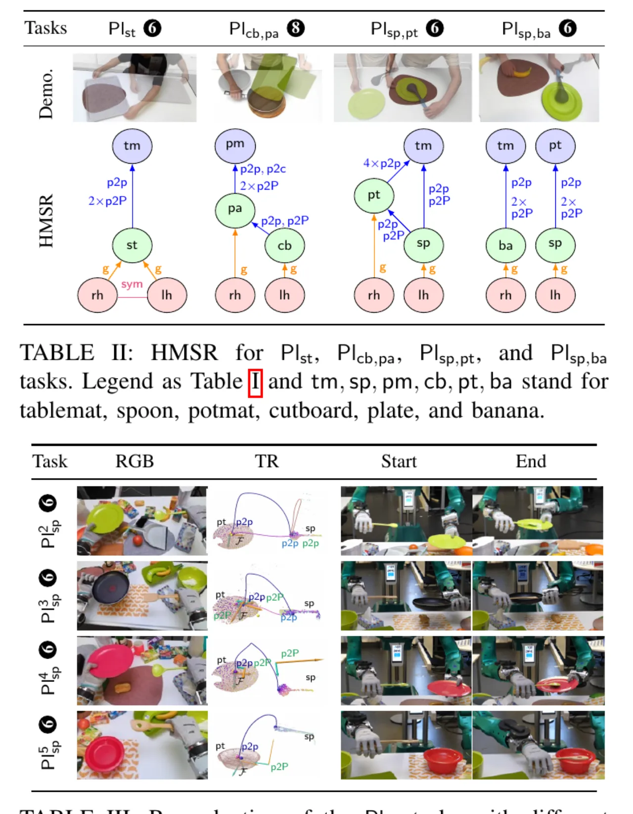

把只能处理单臂的 K-VIL 扩展到双臂操作：从不到 10 段人类演示视频里，联合抽取物体/手之间的 Hybrid Master-Slave Relationship (HMSR)、双臂协同策略，以及基于关键点的亚符号 (sub-symbolic) 任务表示。该表示 object-centric、embodiment-independent、viewpoint-invariant，可在杂乱新场景中对同类物体做 category-level 泛化，并由 ARMAR-6 人形机器人复现。
视觉模仿学习在单臂操作上已能从很少的视觉观测中学到任务，但双臂操作远不止「两个单臂任务相加」：它需要理解手与物体之间更复杂的角色与关系（一个 master 物体本身可能又是另一个 master 的运动显著 slave），并把协同策略与物体关系泛化到杂乱新场景中的同类物体。作者早前的 K-VIL 只能处理单一 master-slave 对 + 静态 master 的单臂任务，无法覆盖这些情况。
“learning bimanual coordination strategies and complex object relations from bimanual visual demonstrations, as well as generalizing them to categorical objects in novel cluttered scenes remain unsolved challenges.”
Bi-KVIL 的核心洞见沿用 K-VIL：双臂任务同样由「跨多次演示保持不变的任务特征」刻画——例如倒水任务的不变量是容器口对准杯沿。据此可从少量演示中自动抽取稀疏、object-centric、与实体无关的表示。

对比：其它双臂模仿学习方法通常需要大量演示——[40][41] 需 20–50 次、[44] 需 2500–4700 次、[45][46] 需 256–4000 次，部分还额外需要 teleoperation 数据或动作捕捉系统。
Bi-KVIL 分两个层级刻画任务：符号层用 HMSR + 协同策略描述「谁跟随谁」，亚符号层用关键点几何约束 + 局部坐标系 + movement primitives 描述「如何精细运动」。感知端先建立数据集，再抽取 HMSR，最后用 Bi-KAC 控制器在机器人上复现。
把手视作带 21 个关键点的特殊物体（MANO 模型）。物体关键点由 Dense Object Net (DON) 按物体类别以自监督、任务无关方式训练得到；用 RAFT 光流跟踪点的运动，用 RTMPose（2D）与 MeshGraphormer（3D）估计人手位姿，再以 Savitzky-Golay 滤波平滑轨迹，为 VIL 提供高质量数据集。
HMSR 是一个有向无环图 (DAG)，统一表示物体与手的角色、关系与任务约束——一个 slave 物体可以在不同层级拥有多个 master。论文归纳出五种 MSR 类型：single、multiple、multi-level、hierarchical、hybrid（Mij 表示第 i 层的第 j 个 master，slave 物体位于最底层）。

由 grasp 关系与 HMSR 导出四种协同策略：Uncoordinated unimanual（单一 grasp，即 K-VIL 情形）、Uncoordinated bimanual（两手各抓不同 slave 且 master 不同、互不协同）、Loosely-coupled 与 Tightly-coupled symmetric（两手抓同一物体且绝对距离变化率低于阈值）。亚符号层则以关键点几何约束表达运动风格：point-to-point (p2p)、point-to-line、point-to-plane (p2P)、point-to-curve (p2c)、point-to-surface，以及新增的 pose constraint（配合 via-point movement primitives / VMP 建模末端位姿分布并采样目标）。
作者把 KAC 扩展为 Bimanual Keypoint-based Admittance Controller (Bi-KAC)，可处理一组带优先级的双臂几何约束，从而在阻抗控制的 TCP 上复现双臂操作 taxonomy [9] 中的各类协同，统一支持单臂与双臂任务。
在多个真实世界应用上评估，演示由 stereo RGB 或 monocular RGB-D 相机采集，复现平台为 ARMAR-6 人形机器人。评估以定性为主：验证 HMSR 抽取是否合理收敛、约束是否随演示增减而正确变化，以及 Bi-KAC 能否在杂乱场景 + out-of-distribution 物体上正确复现（Bi-KAC 的定量评估作者引用其单臂前作 [1]）。
| 任务（记号） | 协同策略 / 特点 |
|---|---|
| Pour water (Pow) / Pour beer (Pob) | 倒水/倒啤酒，共享同一 HMSR 结构，仅 p2p/p2c/pose 约束不同 |
| Place spoon (Plsp, 5 种风格 Pl1–5sp) | 把勺子放到盘子上；loosely-coupled，右手组为非主导 |
| Place serving tray (Plst) | tightly-coupled symmetric，两手对称抬放托盘至桌垫中心 |
| Plcb,pa / Plsp,pt / Plsp,ba | 涉及 >2 个物体（cutboard/potmat、plate、banana 等）的 loosely-coupled 任务 |

“Although our perception pipeline includes hand shape completion [59], it does not handle object (self-)occlusion, leading to failures if keypoints are occluded.” 感知流水线虽含手部形状补全，但对物体自遮挡无能为力。
“Failures may also occur due to inaccurate correspondence detection in specific objects poses, which lead to imprecise local frames on master objects and inaccurate target positions” —— 例如 kettle 的壶嘴落到 cup 杯沿之外。
“Bi-KAC, as a naive extension of KAC, relies entirely on the HMSR for coordination and disregards dual-arm synchronization [32],[63],[64]. Therefore, it may drop the object in bimanual transport tasks.”
方法聚焦于对每个运动段抽取 HMSR 与任务表示，假设人类演示已完成 temporal segmentation。作者将「解决上述局限」与「建立面向双臂模仿学习的综合评测 benchmark」列为 future work。